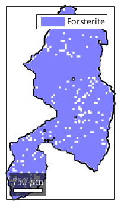
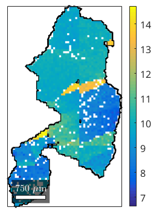
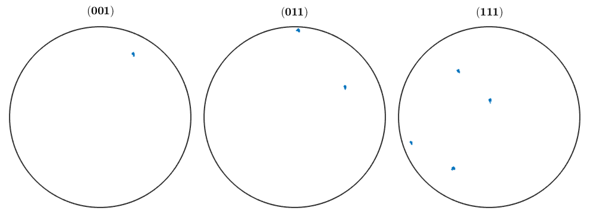
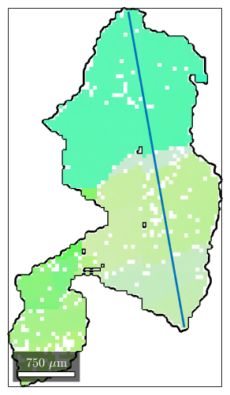
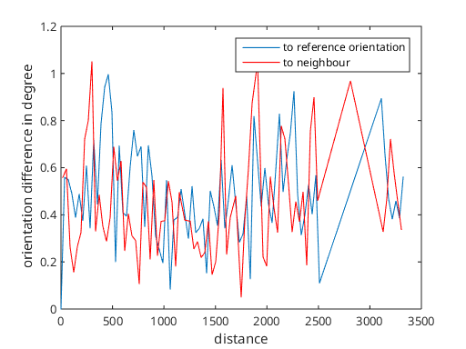
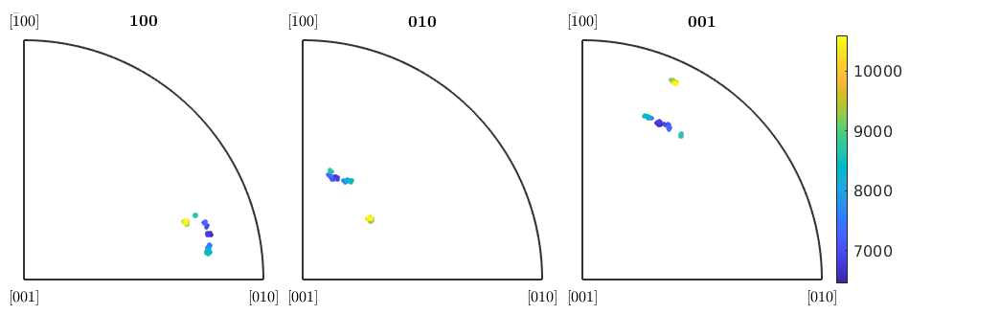

Explanation how to extract and work with single grains from EBSD data
| On this page ... |
| Connection between grains and EBSD data |
| Visualize the misorientation within a grain |
| Testing on Bingham distribution for a single grain |
| Profiles through a single grain |
As usual, let us first import some EBSD data construct some grains
close all mtexdata forsterite plotx2east % consider only indexed data for grain segmentation ebsd = ebsd('indexed'); % perform grain segmentation [grains,ebsd.grainId,ebsd.mis2mean] = calcGrains(ebsd);
The GrainSet contains the EBSD data it was reconstructed from. We can access these data by
grain_selected = grains( grains.grainSize >= 1160) ebsd_selected = ebsd(grain_selected)
grain_selected = grain2d
Phase Grains Mineral Symmetry Crystal reference frame Phase
1 32 Forsterite mmm
Properties: GOS, meanRotation
ebsd_selected = EBSD
Phase Orientations Mineral Color Symmetry Crystal reference frame
1 62262 (100%) Forsterite light blue mmm
Properties: bands, bc, bs, error, mad, x, y, grainId, mis2mean
Scan unit : um
A more convinient way to select grains in daily practice, is by spatial coordinates. Note, that the plotting conventions have fairly to be adjusted to match the spatial coordinates, present in the EBSD or GrainSet.
grain_selected = grains(12000,3000)
grain_selected = grain2d
Phase Grains Mineral Symmetry Crystal reference frame Phase
1 1 Forsterite mmm
GOS meanRotation
0.00808162 73.521
you can get the id of this grain by
grain_selected.id
ans = 640
plot(grain_selected.boundary,'linewidth',2) hold on plot(ebsd(grain_selected)) hold off
Warning: Plot empty.
close plot(grain_selected.boundary,'linewidth',2) hold on plot(ebsd(grain_selected),ebsd(grain_selected).mis2mean.angle./degree) hold off colorbar
Warning: Plot empty.
Although the orientations of an individual grain are highly concentrated, they may vary in the shape. In particular, if the grain was deformed by some process, we are interessed in quantifications.
cs = ebsd(grain_selected).CS; plotPDF(ebsd(grain_selected).orientations,... [Miller(0,0,1,cs),Miller(0,1,1,cs),Miller(1,1,1,cs)],'antipodal')
Testing on the distribution shows a gentle prolatness, nevertheless we would reject the hypothesis for some level of significance, since the distribution is highly concentrated and the numerical results vague.
[qm,lambda,U,kappa] = mean(ebsd(grain_selected).orientations,'approximated');
num2str(kappa')ans = 0 66211.52132 107211.6626 152633.8635
ori = ebsd(grain_selected).orientations; T_spherical = bingham_test(ori,'spherical','approximated'); T_prolate = bingham_test(ori,'prolate', 'approximated'); T_oblate = bingham_test(ori,'oblate', 'approximated'); [T_spherical T_prolate T_oblate]
ans =
0.0048 0.0407 0.0521
Sometimes, grains show large orientation difference when beeing deformed and then its of interest, to characterize the lattice rotation. One way is to order orientations along certain line segment and look at the profile.
We proceed by specifiing such a line segment
close, plot(grain_selected.boundary,'linewidth',2) hold on, plot(ebsd(grain_selected),ebsd(grain_selected).orientations.angle) % line segment x = [11000 2500; ... 13500 5000]; line(x(:,1),x(:,2),'linewidth',2)
Warning: Plot empty.
The command spatialProfile extracts orientations along a line segment
[o,dist] = spatialProfile(ebsd(grain_selected),x);
where the first output argument is a set of orientations ordered along the line segment, and the second is the distance from the starting point.
So, we compute misorientation angle and plot as a profile
m = o(1) \ o close, plot(dist,angle(m)/degree) m = o(1:end-1) .\ o(2:end) hold on, plot(dist(1:end-1)+diff(dist)./2,... % shift angle(m)/degree,'color','r') xlabel('distance'); ylabel('orientation difference in degree') legend('to reference orientation','to neighbour')
m = misorientation size: 1 x 76 crystal symmetry : Forsterite (mmm) crystal symmetry : Forsterite (mmm) m = misorientation size: 75 x 1 crystal symmetry : Forsterite (mmm) crystal symmetry : Forsterite (mmm)
We can also observe the rotation axis, here we colorize after the distance
close, plot(axis(o),dist,'markersize',3,'antipodal')
| DocHelp 0.1 beta |